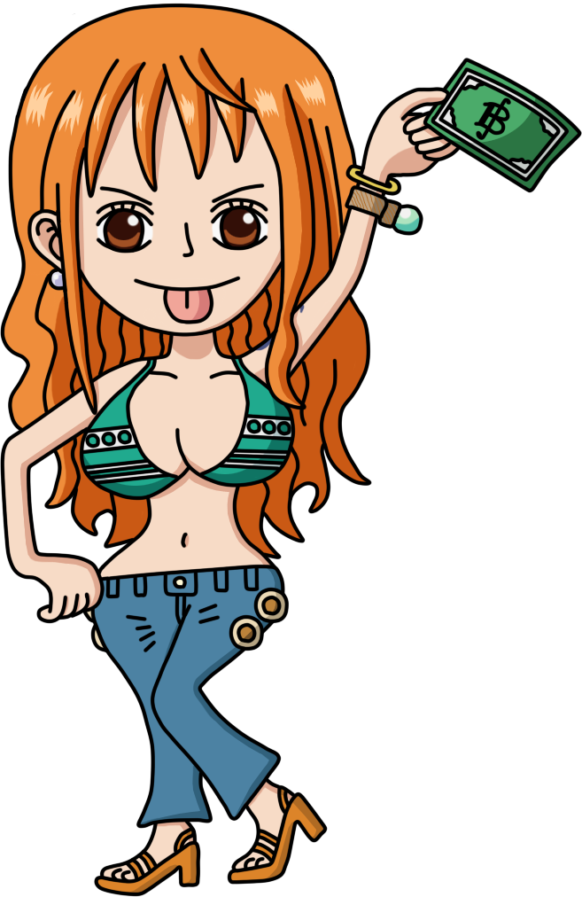
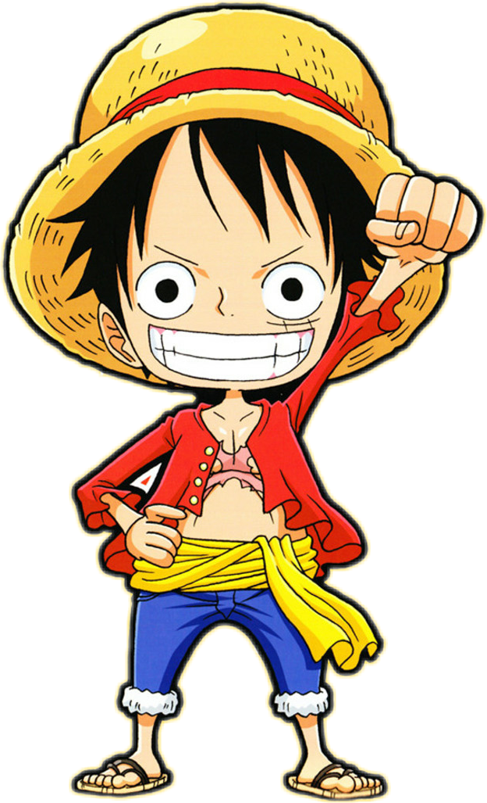
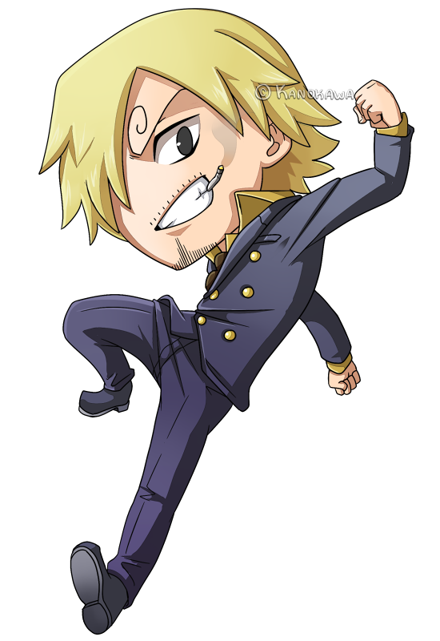

Tripulação🛳
💰Nami 🐈
Nami,(também conhecida como Nami a Gatuna), é a navegadora dos Piratas do Chapéu de Palha. Desde pequena ela gosta de desenhar mapas e cresceu estudando geografia, batimetria e meteorologia para que um dia possa criar o primeiro mapa-múndi.
Monkey D. Luffy👒
Luffy, também conhecido como Luffy Chapéu de Palha ou Chapéu de Palha. Ele é o fundador e o capitão do cada vez mais infame e poderoso Piratas do Chapéu de Palha
⚔Roronoa Zoro🗡

Zoro, também conhecido como "Caçador de Piratas" Zoro, é o combatente dos Piratas do Chapéu de Palha e um ex-caçador de recompensas.
Usopp🏹

"God" Usopp é o Atirador dos Piratas do Chapéu de Palha. Usopp é o filho de Yasopp e Banchina. Ele nasceu e foi criado na Vila Syrup, e era o "capitão" dos Piratas Usopp e o amigo mais próximo de Kaya .
Vinsmoke Sanji🥘
"Perna Negra" Sanji, nascido como Vinsmoke Sanji, e também é o cozinheiro dos Piratas do Chapéu de Palha, assim como um antigo chefe de cozinha do Baratie.
Tony Tony Chopper🩺

Chopper é uma rena. Ele é o médico da tripulação dos Piratas do Chapéu de Palha. Chopper é uma rena que, após comer a Hito Hito no Mi, adquiriu a habilidade de se transformar e raciocinar como os humanos.